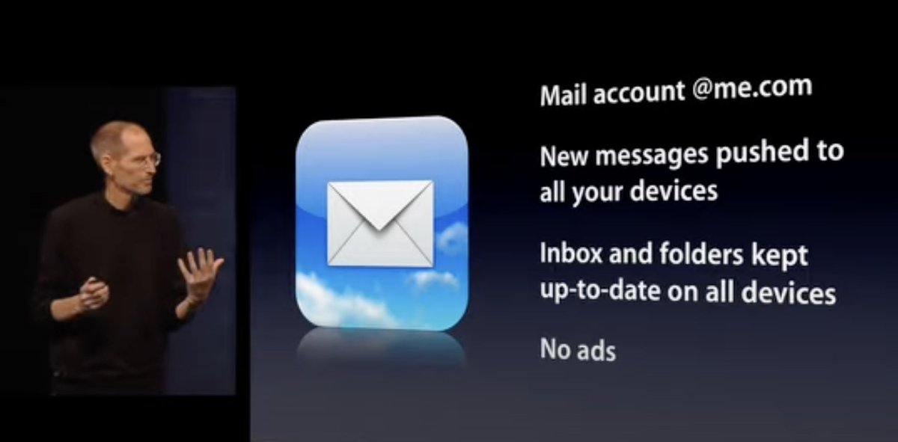

Steve Jobs
“No ads. We build products that we want for ourselves, too, and we just
don’t want ads.”

The gambling/casino-related ads were so dominating the auctions for these
new ad slots that they were even being presented at the bottom of the
product pages for apps intended to help people with gambling addiction.
Other scumminess included ads for “psychic” apps on the product page for
Disney+ and ads for hookup dating apps on the pages for marriage
counseling apps. You really couldn’t make this stuff up.
La roulette automatique
Within one day of the new ad slots going live, Apple issued a terse
statement: We have paused ads related to gambling and a few other
categories on App Store product pages. It’s now nearly a week later, and
the gambling/hookup/psychic-type ads still don’t seem to be showing up
(well, mostly), but it’s also just as hard to see why Apple is selling
these spots in the first place. Well, duh, for the money, yes — that’s
obviously the only plausible answer. But how much money can these ads be
generating? How much can Apple hope they eventually generate? It can’t
possibly be enough money to justify the damage it’s doing to Apple’s
brand. These App Store ads are like the “Intel Inside” stickers on PC
laptops — they’re worth money, but the money’s not worth it. Who’s
laughing about those stickers now? “No ads in the App Store, period” would
have been a powerful, appealing message. One that Apple could have used to
justify its control over all software on the platform and its much-debated
mandatory cut of all app and game transactions. “We sell ads in the App
Store, but they’re OK because they don’t track you” seems to be the
message Apple is going for, but that’s neither powerful nor appealing. It
boils down to “Hey, it could be worse.” Last month The Information
published a piece by Wayne Ma on Phil Schiller’s leadership of the App
Store. It contained this bit regarding the Today tab, which is effectively
the front page of the store (italic emphasis added): In 2015, App Store
employees pitched a redesign of the store to Cue that required hiring and
paying for a large editorial staff to write stories about apps and their
developers. The redesign was meant to encourage users to visit the App
Store every day to discover new apps, rather than having the store act
like a vending machine that existed merely to peddle software. Cue wasn’t
receptive to the pitch as he didn’t believe it was worth the money, given
that the App Store was already performing well, according to a person with
direct knowledge of the discussions. Schiller, however, approved the
redesign in his first days on the job, this person said. He believed the
App Store had lost a lot of the spontaneity and fun associated with
discovering new apps. He thought an editorial team could help bring those
qualities back, according to a second person with direct knowledge of the
project. In 2017, Apple launched the redesign, which included new tabs on
the App Store called Today, Games and Apps, highlighting various apps and
developers. While the general perception among users Apple surveyed after
the redesign was that developers had to pay to be featured on the App
Store, that wasn’t the case, according to people familiar with the matter.
Schiller gave the editorial team the power to select which games and apps
to promote or feature on these tabs, without pressuring them to base those
decisions on business and partnership goals, those people said.
Les rouleaux mécaniques
Charles August Fey créa la première machine à sous à rouleaux, la Card
Bell en 1898, puis la perfectionna en 1899 pour créer le modèle Liberty
Bell, plus compacte et en métal3. Elle remplace des roues par des rouleaux
sur lesquels figurent des symboles comme le carreau, l’as de pique, le
cœur, le fer à cheval et la fameuse cloche de la liberté. L'atout de ses
machines tient surtout dans la combinatoire : un millier de combinaisons
sont possibles alors qu’une centaine seulement était obtenue auparavant.
Devant le succès fulgurant de la machine, une concurrence s'organise.
Puisque Charles August Fey refuse de commercialiser son brevet, les autres
compagnies sont obligées de construire leurs propres appareils. Après le
vol d’un exemplaire de Liberty Bell, Mills lance une machine très proche.
D’autres entreprises, comme Caille notamment, font de même. Au cours de la
prohibition, le jeu d’argent est interdit aux États-Unis. L'industrie de
la machine à sous est donc menacée. Toutefois, Mills trouve une parade en
convertissant ses bandits manchots en distributeurs de bonbons. Pour
l'occasion, les symboles sont changés en fruit avec, par exemple, une
prune, une orange, un citron, une cerise et de la menthe. Le client achète
des friandises avec son argent. Les rouleaux se mettent à tourner puis
s’arrêtent. S’il obtient une combinaison gagnante, il remporte des jetons
qui peuvent être échangés contre des boissons ou d’autres lots. Les
machines à sous mécaniques sont la norme jusqu’au moment au Bally lance
les appareils électromécaniques, au cours de l’année 1963.
La roulette automatique
Les machines à sous modernes sont électroniques, même si elles peuvent
prendre l'apparence de machines mécaniques (machines à rouleaux). Il
existe plusieurs types de machines à sous électroniques : les machines à
rouleaux vidéos, les machines à rouleaux classiques, les poker, les
multijeux. Dans tous les cas, le fonctionnement est identique. Une machine
à sous possède un cycle de combinaisons. Ce cycle répertorie comme une
liste toutes les combinaisons possibles que la machine peut sortir. Le
joueur insère de l'argent dans la machine (pièces, billets, argent
électronique) et peut lancer le jeu à l'aide de boutons, d'un levier
(bandit manchot) ou d'un écran tactile. Au moment où il lance le jeu, une
des combinaisons du cycle est choisie aléatoirement et s'affiche. Le
joueur gagne ou non un prix, et peut rejouer. La combinaison qui a été
obtenue est ensuite replacée dans le cycle, donc chaque joueur a les mêmes
probabilités de gagner un lot. Chaque machine à sous électronique possède
un taux de redistribution4. Ce taux est fixe sur une machine et est très
souvent compris entre 85 et 99,99 %. Il varie d'une machine à une autre,
ce qui explique que sur certaines machines le joueur a davantage
l'impression de gagner ou de perdre. Ce taux correspond à la quantité
d'argent d'abord jouée sur la machine, et qui sera reversée en tant que
gain au joueur. Le montant d'argent non redistribué revient au casino.
Selon le pays, le casino est imposé sur ce montant. (En France, par
exemple, le casino ne gagne que la moitié de cette somme). Par exemple, et
statistiquement, sur une machine avec un taux de redistribution à 90 %, un
joueur qui met 100 crédits va remporter 90 crédits. 10 crédits reviendront
au casino. Bien sûr, il faut prendre en compte d'autres paramètres comme
le hasard ou les jackpots. Une machine à sous est généralement équipée de
nombreux compteurs électroniques et de compteurs mécaniques. À tout
moment, une machine à sous peut indiquer le montant en argent inséré, le
montant joué, le montant gagné, le montant reversé en tant que jackpot,
etc. À la fin d'un cycle sur une machine à sous, à l'aide des compteurs
d'entrée d'argent et de sortie, on retrouve systématiquement et exactement
la valeur du taux de redistribution. TEST